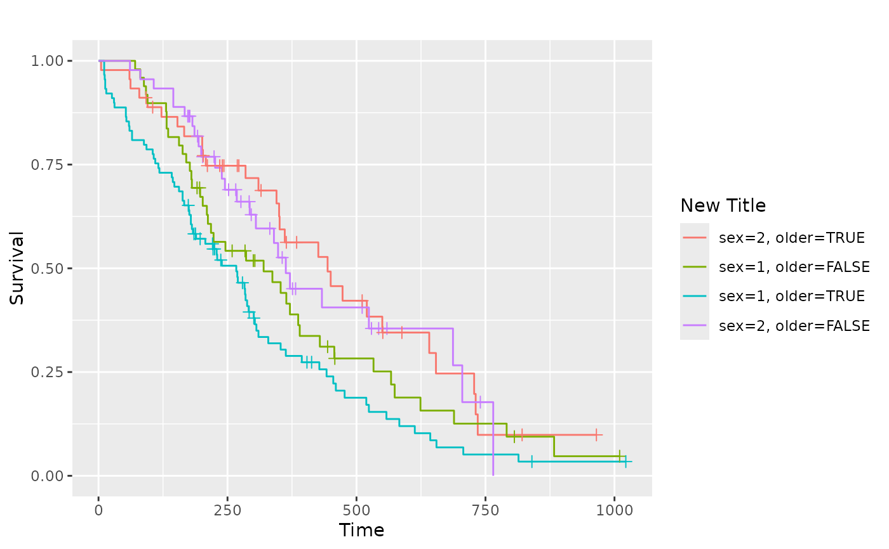
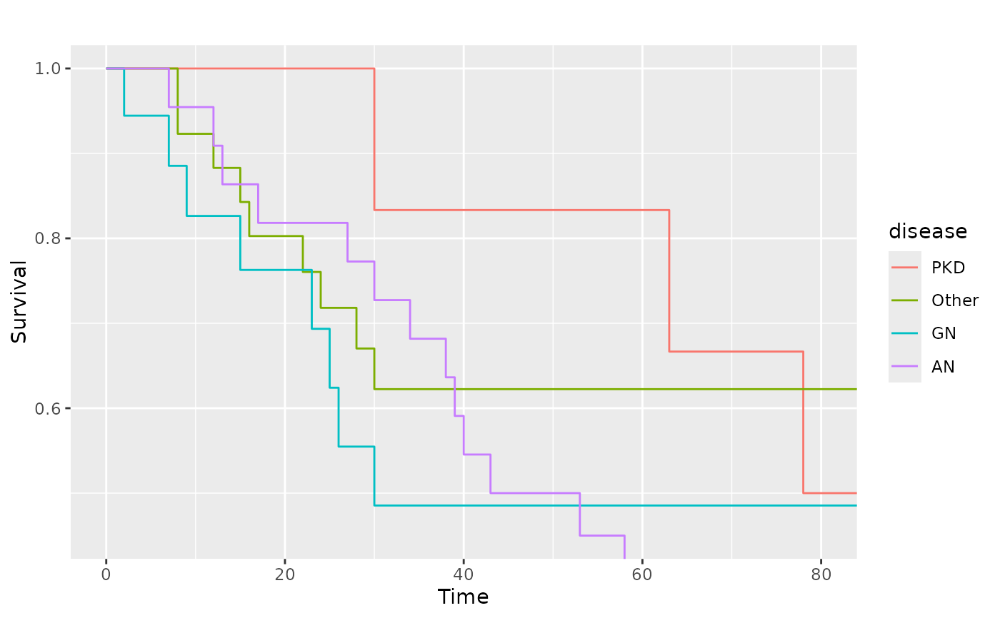

This function produces Kaplan-Meier plots using ggplot2.
As a first argument it needs a survfit object, created by the
survival package. Default settings differ for single stratum and
multiple strata objects.
ggsurv( s, CI = "def", plot.cens = TRUE, surv.col = "gg.def", cens.col = "gg.def", lty.est = 1, lty.ci = 2, size.est = 0.5, size.ci = size.est, cens.size = 2, cens.shape = 3, back.white = FALSE, xlab = "Time", ylab = "Survival", main = "", order.legend = TRUE )
Arguments
| s | an object of class |
|---|---|
| CI | should a confidence interval be plotted? Defaults to |
| plot.cens | mark the censored observations? |
| surv.col | colour of the survival estimate. Defaults to black for one stratum, and to the default ggplot2 colours for multiple strata. Length of vector with colour names should be either 1 or equal to the number of strata. |
| cens.col | colour of the points that mark censored observations. |
| lty.est | linetype of the survival curve(s). Vector length should be either 1 or equal to the number of strata. |
| lty.ci | linetype of the bounds that mark the 95% CI. |
| size.est | line width of the survival curve |
| size.ci | line width of the 95% CI |
| cens.size | point size of the censoring points |
| cens.shape | shape of the points that mark censored observations. |
| back.white | if TRUE the background will not be the default
grey of |
| xlab | the label of the x-axis. |
| ylab | the label of the y-axis. |
| main | the plot label. |
| order.legend | boolean to determine if the legend display should be ordered by final survival time |
Value
An object of class ggplot
Author
Edwin Thoen
Examples
# Small function to display plots only if it's interactive p_ <- GGally::print_if_interactive if (require(survival) && require(scales)) { data(lung, package = "survival") sf.lung <- survival::survfit(Surv(time, status) ~ 1, data = lung) p_(ggsurv(sf.lung)) # Multiple strata examples sf.sex <- survival::survfit(Surv(time, status) ~ sex, data = lung) pl.sex <- ggsurv(sf.sex) p_(pl.sex) # Adjusting the legend of the ggsurv fit p_(pl.sex + ggplot2::guides(linetype = FALSE) + ggplot2::scale_colour_discrete( name = 'Sex', breaks = c(1,2), labels = c('Male', 'Female') )) # Multiple factors lung2 <- plyr::mutate(lung, older = as.factor(age > 60)) sf.sex2 <- survival::survfit(Surv(time, status) ~ sex + older, data = lung2) pl.sex2 <- ggsurv(sf.sex2) p_(pl.sex2) # Change legend title p_(pl.sex2 + labs(color = "New Title", linetype = "New Title")) # We can still adjust the plot after fitting data(kidney, package = "survival") sf.kid <- survival::survfit(Surv(time, status) ~ disease, data = kidney) pl.kid <- ggsurv(sf.kid, plot.cens = FALSE) p_(pl.kid) # Zoom in to first 80 days p_(pl.kid + ggplot2::coord_cartesian(xlim = c(0, 80), ylim = c(0.45, 1))) # Add the diseases names to the plot and remove legend p_(pl.kid + ggplot2::annotate( "text", label = c("PKD", "Other", "GN", "AN"), x = c(90, 125, 5, 60), y = c(0.8, 0.65, 0.55, 0.30), size = 5, colour = scales::hue_pal( h = c(0, 360) + 15, c = 100, l = 65, h.start = 0, direction = 1 )(4) ) + ggplot2::guides(color = FALSE, linetype = FALSE)) }#>#> #>